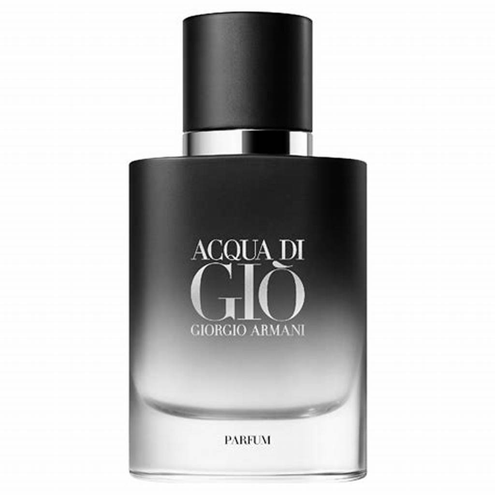
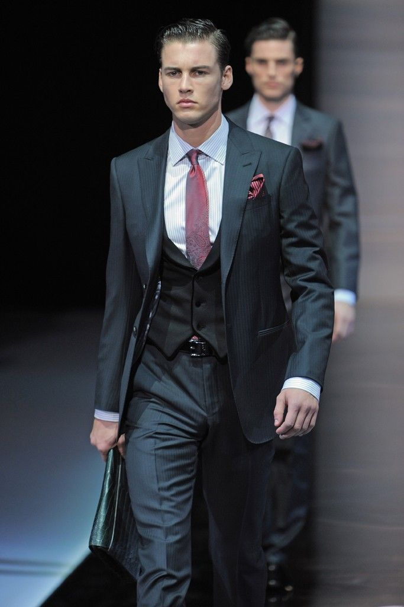
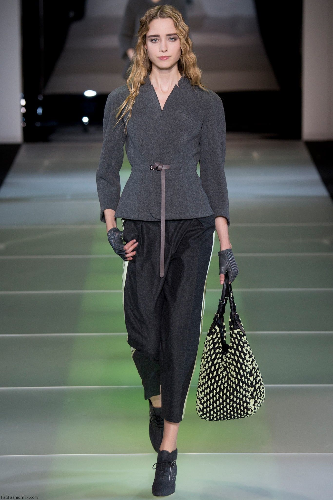

Giorgio Armani, rođen 11. srpnja 1934.) talijanski je modni dizajner. Prvo je stekao priznanje radeći za Cerruti, a zatim za mnoge druge, uključujući Allegri, Bagutta i Hilton. Svoju tvrtku, Armani, osnovao je 1975. godine, koja se s vremenom proširila na glazbu, sport i luksuzne hotele. Do 2001. godine, Armani je bio hvaljen kao najuspješniji dizajner talijanskog podrijetla, i pripisuje mu se pionirska uloga u modi za crveni tepih. Nakon dvogodišnje službe u vojsci, Armani je 1957. godine postao dekorater izloga i prodavač u robnoj kući La Rinascente u Milanu. Iste godine bio je odgovoran za izlaganje najranijih odjevnih predmeta inovativne finske tvrtke za tekstil, odjeću i kućni namještaj, Marimekko. Kasnije je postao prodavač u odjelu muške odjeće. U tom svojstvu stekao je dragocjeno iskustvo u marketinškom aspektu modne industrije. Sredinom 1960-ih, Armani se preselio u tvrtku Nino Cerruti, gdje je dizajnirao mušku odjeću. Njegove vještine bile su tražene, i sljedeće desetljeće, dok je nastavio raditi za Cerruti, Armani je također radio kao slobodnjak, pridonoseći dizajnima za čak deset proizvođača istovremeno.
  